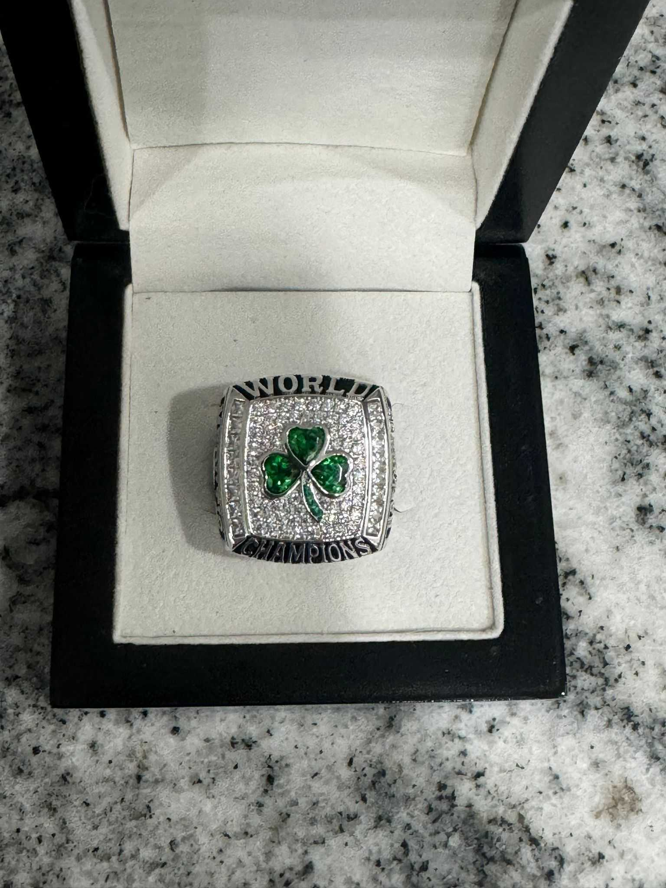
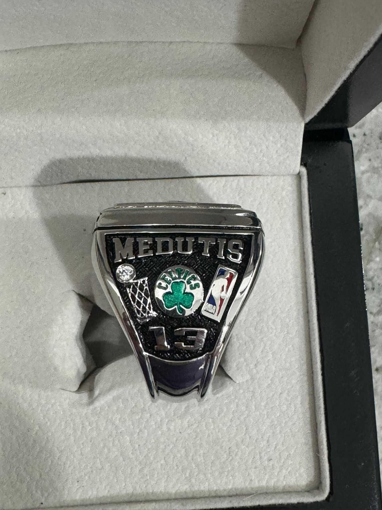

UFL - kas tai?
UFL, arba "United Fantasy League" yra lietuvių bendruomenė išsimėčiusi visame pasaulyje, aktyviai žaidžianti
ESPN NBA fantasy platformos žaidimą. Šiuo metu bendruomenę sudaro 32 komandų valdytojai, kurie varžosi
dvejose A ir B lygose.
Nuoroda į žaidimą.
A lygos nugalėtojas apdovanojamas čempiono žiedu, visai kaip NBA lygoje.

